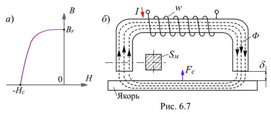
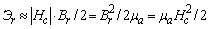

6.1.7.3. Постоянные магниты
Постоянные магниты выполняют из литого чугуна, литой стали или из толстых штампованных листов стали с почти прямоугольной петлёй гистерезиса: с высокой остаточной индукцией Вr и большой коэрцитивной силой Hc (рис. 6.7, а). Они характеризуются левой ветвью: от Br = 1,35…0,6 Тл до - Нс (|Нс| = 40…200 кА/м), для которых энергия размагничивания на единицу объема
 |
(6.4) |
|---|
составляет 7…80 кДж/м3.